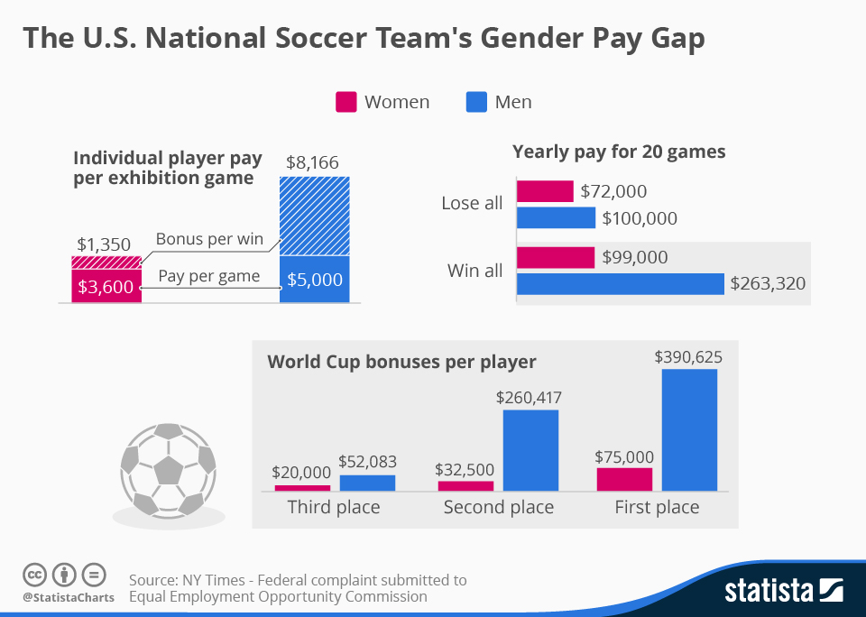
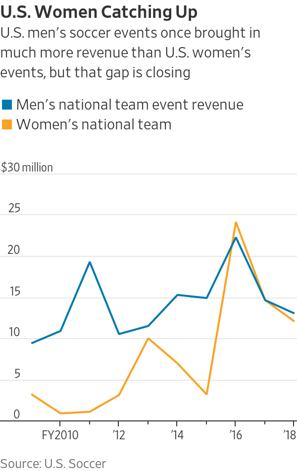

 Women’s USA soccer players make about $25,000 - $85,000 per season, while the average is around $40,000. Some original players from the U.S. National soccer team make around double the average.The only issue is that teamshave a cap of about $800,000 for salaries. Professional soccer salaries for the men’s are much different. They range from $25,000 to $300,000 per player. The average appears to be around $60,000 per player, with many players earning above and beyond that.
U.S. women’s soccer games have generated more revenue than U.S. men’s games over the past three years.In 2016, women’s games generated $1.9 million more in revenue than men’s games. From 2016 to 2018, women’s games generated approximately $50.8 million in revenue, compared with $49.9 million for men’s games.
There are many difference's between women's and men's treatment. Money is not the only that unqual. Women's soccer doesn't receive nearly the same media coverage as men's soccer. According to the commissioner of the Women's Premier Soccer League, for every twenty articles on men's soccer, women get maybe one. Another differentiality is playing fields. While men play on nice real grass fields, women play on terf fields. Most Soccer players prefer to play on grass over turf because, injury risk increases by 45%. Another disadvantages are excessive heat, and unnatural bounce of the ball significantly affect the performance of the game on turf. The game is played at a different speed, and in which you have to play in different conditions.
In August, mediation talks broke down between the USSF and the women's soccer team,
with a spokesperson for the players saying they "eagerly look forward to a jury trial."
The two sides met in New York for several days but could not reach any formal agreement.
On Aug. 19, District Judge R. Gary Klausner set a trial date for the lawsuit
brought against U.S. Soccer by members of the women's national team.
The trial will begin May 5, 2020, and last four to five days.
The U.S. women
-- the plaintiffs -- filed a motion on Sept. 9 requesting the court certify
the players as a class. Alex Morgan, Megan Rapinoe, Carli Lloyd and Becky
Sauerbrunn would be appointed as class representatives. The class designation
would award the players injunctive relief for any player who is a team member
on the day of final judgment or appeal, as well as back pay and punitive
damages for any player on the team at any time between Feb. 4, 2014, and the present.
The USSF, however, filed a brief opposing certification of the players' class
status on Sept. 30. That filing contends that class certification should be
denied because from 2014 to 2019, the proposed class representatives
-- Morgan, Rapinoe, Lloyd and Sauerbrunn -- were paid more than the highest-earning
men's national soccer team members "and therefore suffered no injury." In its filing,
USSF provided charts that claimed Lloyd, Rapinoe, Sauerbrunn and Morgan
each earned over $1.5 million (including salaries for playing in the NWSL),
while the highest-earning men's player made $993,967. If the NWSL salaries
are excluded, Lloyd, Rapinoe, Sauerbrunn and Morgan made just over $1.1 million.
Things have continued to be contentious between the two sides since the
conclusion of the World Cup. In July, U.S. Soccer president Carlos Cordeiro
released a letter that claimed the federation has paid the female players
more than the men in recent years. Cordeiro's letter details analysis --
which he says was conducted by his staff and reviewed by an accounting firm --
that shows that U.S. Soccer paid female players $34.1 million in salaries
and game bonuses from 2010 to '18 and paid male players $26.4 million in the same period.
However, there was some murkiness because of the differences in the compensation
structures for the men's and women's teams. What's more, salaries in the
National Women's Soccer League were factored in to the calculations.
Levinson called the letter "a sad attempt by USSF to quell the overwhelming
tide of support the USWNT has received from everyone from fans to sponsors
to the United States Congress.
"The U.S. men's team issued a statement in
support of the USWNT, saying, "The members of the United States National
Soccer Team Players Association once again stands with the members of the
world champion Women's National Team in their pursuit of fair compensation
for their work as professional soccer players. The USMNT players were not
impressed with US Soccer Federation president Carlos Cordeiro's letter made
public on Monday. The Federation downplays contributions to the sport when
it suits them. This is more of the same."